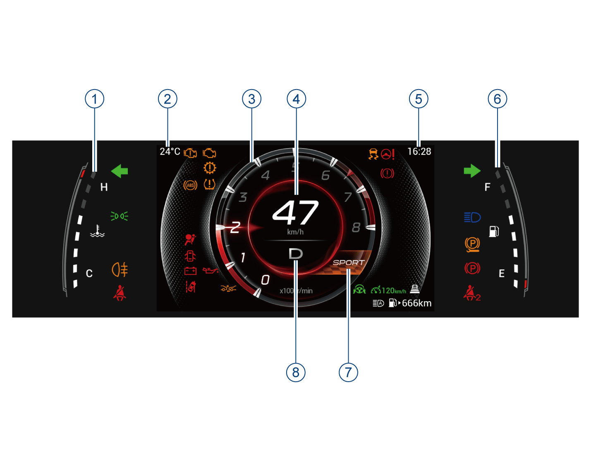

本次行驶：指车辆打开整车电源后单次行驶内的行车信息（行驶里程/平均油耗/行驶时间），单次点火循环会重新清零。
仪表视图
7英寸TFT屏组合仪表-运动主题(Ⅰ)*
① 发动机冷却液温度表
② 车外温度
③ 发动机转速表
④ 车速表
⑤ 时间
⑥ 燃油表
⑦ 驾驶模式
⑧ 挡位显示
7英寸TFT屏组合仪表-运动主题(Ⅱ)*

① 发动机冷却液温度表
② 车外温度
③ 仪表显示屏
④ 发动机转速表
⑤ 车速表
⑥ 时间
⑦ 燃油表
⑧ 驾驶模式
⑨ 挡位显示
7英寸TFT屏组合仪表-全局主题*

① 发动机冷却液温度表
② 车外温度
③ 转速表
④ 组合仪表显示屏
⑤ 车速表
⑥ 时间
⑦ 燃油表
⑧ 挡位显示
⑨ 驾驶模式
7英寸TFT屏组合仪表-极速主题*

① 发动机冷却液温度表
② 车外温度
③ 转速表
④ 车速表
⑤ 时间
⑥ 燃油表
⑦ 挡位显示
⑧ 驾驶模式
10.25英寸组合仪表-高科技主题*

① 组合仪表显示屏
② 车外温度
③ 时间
④ 车速表
⑤ 燃油表
⑥ 挡位显示
⑦ 驾驶模式
⑧ 发动机冷却液温度表
10.25英寸组合仪表-有机主题*

① 组合仪表显示屏
② 车外温度
③ 转速表
④ 车速表
⑤ 时间
⑥ 娱乐信息
⑦ 燃油表
⑧ 挡位显示
⑨ 驾驶模式
⑩ 发动机冷却液温度表
10.25英寸组合仪表-全地图主题*

① 组合仪表显示屏
② 车外温度
③ 时间
④ 燃油表
⑤ 车速表
⑥ 挡位显示
⑦ 驾驶模式
⑧ 发动机冷却液温度表
⑨ 转速表
10.25英寸组合仪表-极速主题*

① 发动机冷却液温度表
② 车外温度
③ 转速表
④ 车速表
⑤ 时间
⑥ 燃油表
⑦ 挡位显示
⑧ 组合仪表显示屏
⑨ 驾驶模式
发动机转速表
发动机转速表用于指示发动机当前转速，单位为x1000r/min。
组合仪表显示屏
显示信息包括：行车信息=>见50页、G值表=>见53页、计时器*=>见53页、车辆状态=>见54页、油耗趋势图=>见54页、导航信息*=>见54页、ADAS*=>见55页、报警中心=>见55页、音响娱乐信息=>见57页。
发动机冷却液温度表
发动机冷却液温度表（水温表）用于指示发动机冷却液当前温度。
– 指示范围C~H，其中“C”表示低温度，“H”表示高温度。
–发动机启动后，水温表根据不同温度点亮相应的格数，发动机的工作温度会根据气温与发动机负荷，产生各种变化。
– 水温表偏高的情况：炎热天气长途爬坡时；高速行车后降低车速或停车时；在交通繁忙地区，使用空调系统并让发动机长时间怠速运转时；拖有尾车时等。
– 水温表偏低的情况：寒冷天气冷启动后热车未充分时；寒冷天气暖风挡位/风量较大时等。
驾驶模式信息
– 根据接收到的信号显示车辆当前使用的驾驶模式。
车速表
车速表用于指示车辆当前车速，单位为km/h。
燃油表
燃油表用于指示车辆油箱内当前剩余燃油量。
– 指示范围E~F，其中“E”表示燃油箱空，“F”表示燃油箱加满。
–
根据燃油箱剩余燃油量点亮相应的格数，当没有或仅第1格格子点亮时，表示燃油箱内燃油不足，组合仪表的 指示灯黄色闪烁，提醒驾驶员燃油不足，请尽快加油。
指示灯黄色闪烁，提醒驾驶员燃油不足，请尽快加油。
续航里程
– 续航里程固定位置常显在屏幕右下角，指示图标为燃油指示灯。
– 续航里程低于50km或者油量低于10%时，续航里程会显示“低”，顶部弹窗文字同时提醒用户及时加油。
挡位显示信息
–根据接收到的信号显示P、R、N、D、M*等车辆当前挡位信息。对于有拨片换挡的配置，拨动换挡拨片时，可以短时显示D/M*右下角的数字挡位。
总里程
– 显示范围0km~999999km。
行车信息（7英寸组合仪表）
整车电源在“ON”挡位时，上拨/下拨方向盘左侧OK拨钮，可切换显示信息界面。
– 行车信息界面包含：本次行驶、累计行驶、总里程和车辆状态。
本次行驶

累计行驶

累计行驶：指车辆自从上次复位之后的行车信息（行驶里程/平均油耗/行驶时间），可以长按“OK”按键重置。总里程信息在此界面显示，不可以重新设置。
行车信息（10.25英寸组合仪表）

整车电源在“ON”挡位时，上拨/下拨方向盘左侧OK拨钮，切换至行车信息界面。
– 行车信息里包含本次驾驶和累计驾驶总里程。
• 本次行驶：指车辆打开整车电源后单次行驶内的行车信息，包括行驶里程、平均油耗、行驶时间信息，该参数不可以重置。
• 累计行驶：指车辆自从上次复位之后的行车信息，包含行驶里程、平均油耗、行驶时间信息，可以长按“OK”按键重置。
• 总里程：指车辆的行驶里程，不可以重新设置。
仪表主题设置

整车电源在“ON”挡位，通过短按方向盘左侧“VIEW”按键，进行仪表主题设置。
– 短按“VIEW”按键，7英寸组合仪表主题在“运动主题、全局主题、极速主题”之间循环切换。
– 短按“VIEW”按键，10.25英寸组合仪表主题在“高科技主题、有机主题、全地图主题、极速主题”之间循环切换。
菜单设置

整车电源在“ON”挡位，车速为零时，通过音响主机“系统设置→屏幕显示→仪表显示”，进行以下功能设置：
1. 仪表音量
– 仪表声音可选择“低”、“中”、“高”三种模式，默认是“中”。
2. 油耗/里程单位
– 用户可根据个人习惯选择L/100km,km或km/L,km或mpg（英）,mi或mpg（美）,mi作为油耗/里程的单位，默认是L/100km,km。
3. 温度单位
– 用户可根据个人习惯选择摄氏温度“℃”或华氏温度“℉”两种温度单位显示模式，默认是℃。
4. 压强单位
– 用户可根据个人习惯选择“kPa”、“bar”、“psi”三种压强单位显示模式，默认是kPa。
5. 仪表背光
– 用户可根据个人习惯选择1~8不同等级背光，默认4级。
6. 后排安全带提醒
– 打开该功能后，后排乘客如未系安全带，将给予提醒。
7. 重置维护提醒
– 点击“重置”按键可重置维护提醒里程。
8. 维护提醒周期
– 用户可根据个人需求设置维护提醒周期， 包含“5000km”、“7500km”、“10000km”等选项。
9. 默认设置
– 点击“恢复”按键，仪表显示设置项全部恢复默认值。
G值表

–G值表体现车辆的加速状态，中间红点模拟驾驶员的车内姿态。
–G值表旁边四个圈代表方向盘转角，油门开度，刹车深度。
计时器*

– 计时器可以通过自定义按键*激活。当中控设置自定义按键*为计时器功能且启动发动机后，通过方向盘自定义按键*，可以激活计时器功能。
车辆状态

–车辆状态：包含胎温、胎压、车门、前机舱盖和行李箱状态，还有安全带报警信息。当有异常信息会主动弹出该界面。
油耗趋势图

– 油耗趋势图体现最近50km的油耗信息。每1km更新一次，此界面平均油耗体现的是最近50km的平均油耗。
导航信息*

– 当音响系统导航功能开启后，导航信息可以同步到仪表显示屏。
ADAS*

– 当ADAS功能开启时，显示相应的ADAS信息，包括本车和左右车道线信息。当检测到前车时，可以显示前车和跟车时距信息。
报警信息

报警中心用于保存报警信息，报警信息会以文字、图片或蜂鸣声等来显示车辆当前的状态，驾驶员应时常留意是否有报警信息。
– 若整车状态无异常，不显示报警中心。
– 若车辆出现故障或者激活关闭某些功能时，组合仪表会在屏幕上方弹出相应的文字或者图片信息提示驾驶员当前车辆的状态。
– 报警信息弹出后，通过方向盘左侧“OK”拨钮确认报警信息，部分报警信息会存入报警中心。如无操作5s后，报警信息再次显示。
电话信息

– 当音响系统连接手机蓝牙后，有通话时，电话信息在组合仪表显示屏的下方显示。
– 当使用B-CALL*或E-CALL*时，电话信息显示B-CALL*或E-CALL*状态。
音响娱乐信息

– 整车电源在“ON”挡位时，按压方向盘右侧拨钮切换至音响娱乐信息界面。当音响系统未开启时，音响娱乐信息界面会显示“多媒体信息无法获取”提示。

– 当音响系统开启时，音响娱乐信息显示音响系统当前的播放信息。
— 页面到底了 —